Curso de Google Documentos › Menú Editar
Video largo · Menú Editar
Google Docs: menú Editar paso a paso (tutorial completo)
Fecha del video: · Programado
Mirá el video completo
Estreno del video: 26/11/2026 · 09:00 (hora Argentina)
¿Sabés todo lo que podés hacer desde el menú Editar de Google Docs? Este video de menos de 2 minutos lo recorre completo, opción por opción, con capturas reales de un documento de ejemplo («Lista de compras»). Abajo tenés cada parte resumida, con su captura y su atajo de teclado.
Capítulos: 00:00 Introducción: dónde está el menú Editar · 00:17 Deshacer y Rehacer · 00:30 Cortar y Copiar (en gris sin selección) · 00:48 Pegar y Pegar sin formato · 01:04 Seleccionar todo y Eliminar · 01:17 Buscar y reemplazar · 01:33 Las 9 opciones y cierre.
1. Dónde está el menú Editar
Abrí tu documento. El menú Editar está arriba, justo al lado de Archivo. Hacé clic y se despliegan sus 9 opciones: desde Deshacer hasta Buscar y reemplazar.
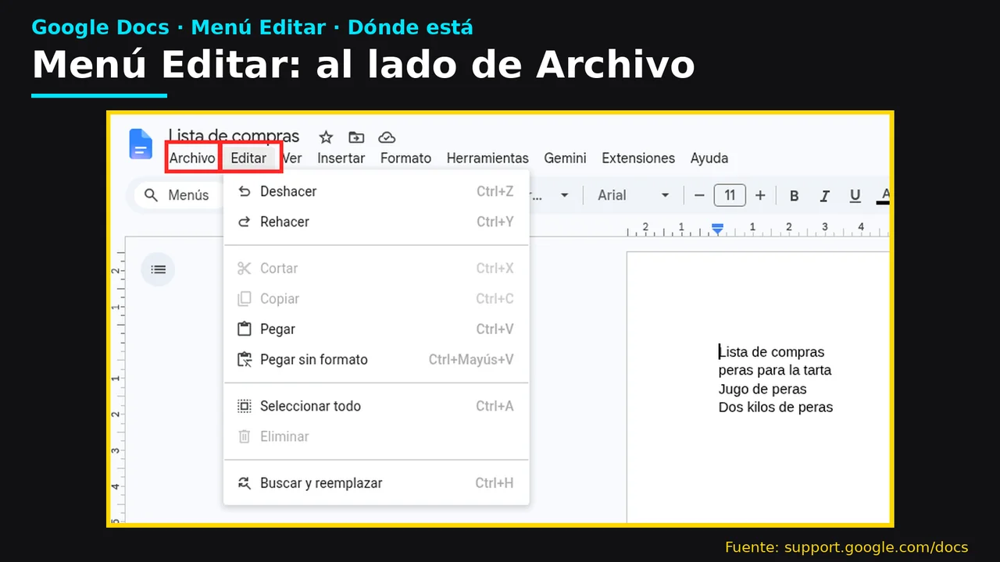
2. Deshacer y Rehacer
Editar → Deshacer (Ctrl + Z) vuelve atrás el último cambio que hiciste. Si borraste algo sin querer, lo recuperás al instante.
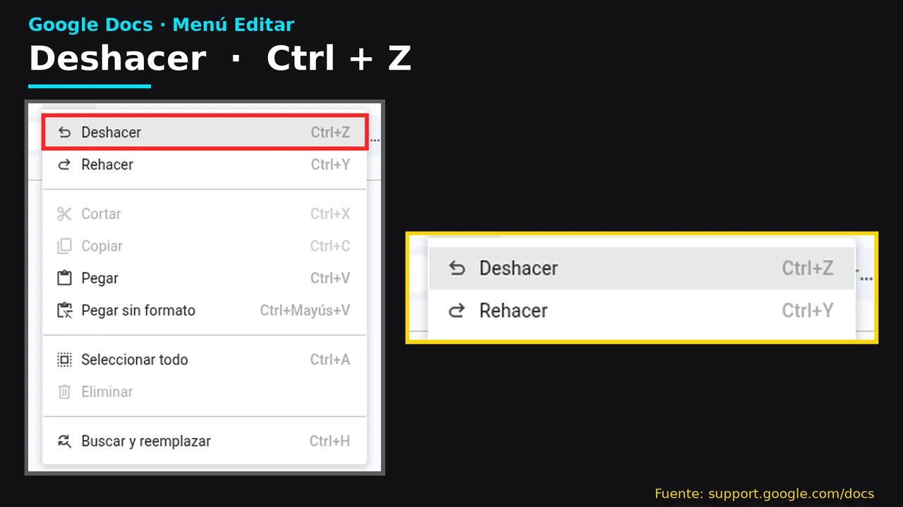
Editar → Rehacer (Ctrl + Y) vuelve a aplicar lo que acabás de deshacer.
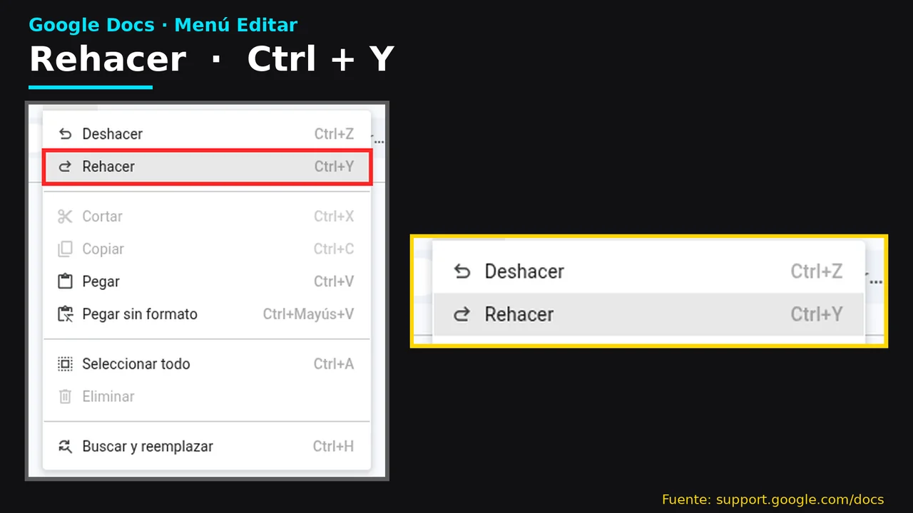
3. Cortar y Copiar
Cortar y Copiar aparecen en gris hasta que seleccionás texto. Seleccioná una palabra (en el ejemplo, «peras») y se activan.
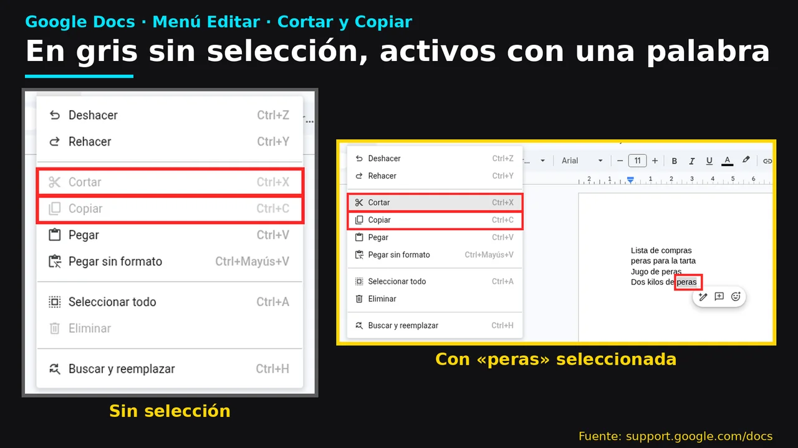
Editar → Cortar (Ctrl + X) saca el texto seleccionado para pegarlo en otro lugar. Editar → Copiar (Ctrl + C) lo duplica sin sacarlo.
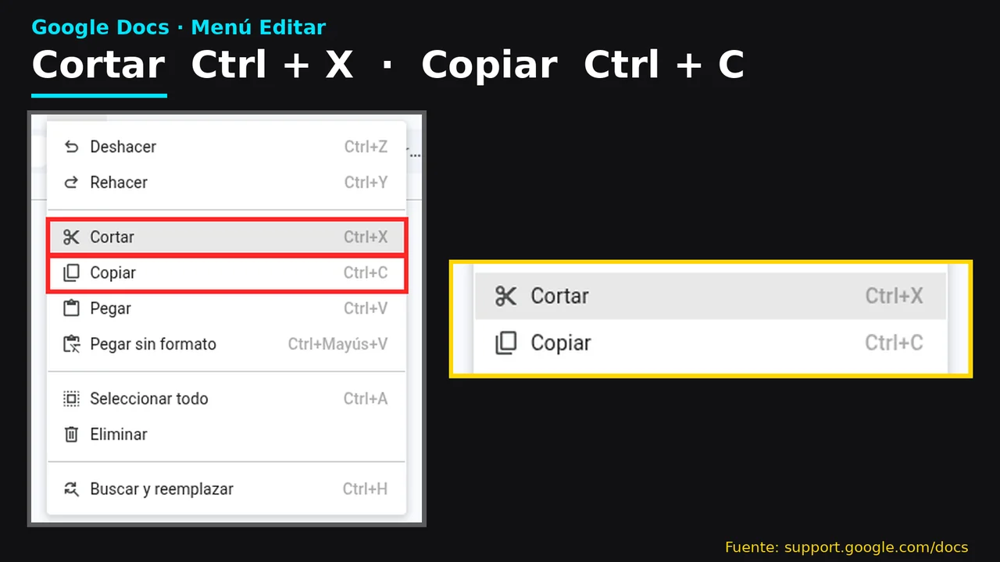
4. Pegar y Pegar sin formato
Editar → Pegar (Ctrl + V) inserta lo que copiaste, con su formato original.
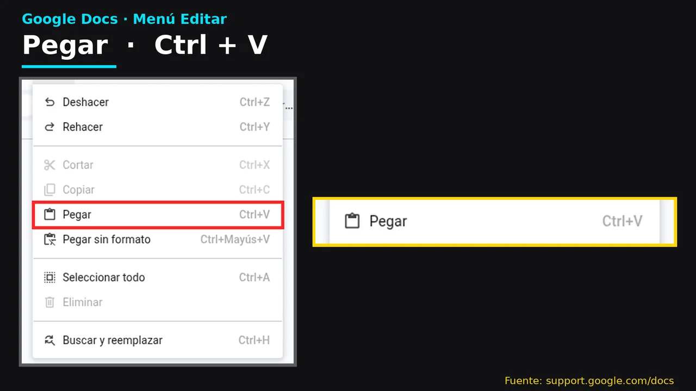
Editar → Pegar sin formato (Ctrl + Mayús + V) pega solo el texto y toma el estilo del documento. Es ideal para traer texto de una página web sin arrastrar fuentes ni colores raros.
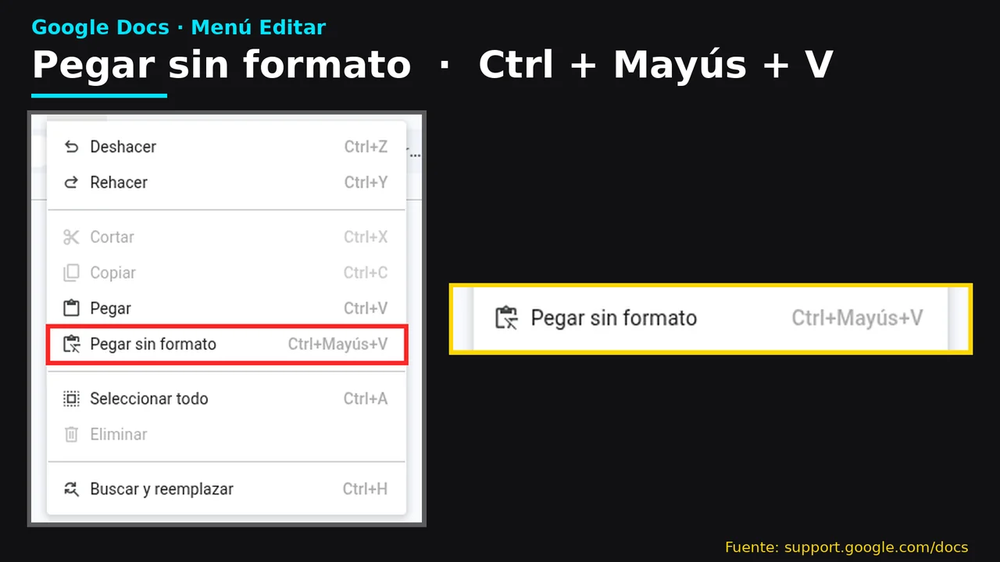
5. Seleccionar todo y Eliminar
Editar → Seleccionar todo (Ctrl + A) marca el documento completo, por ejemplo para cambiarle la fuente de una sola vez.
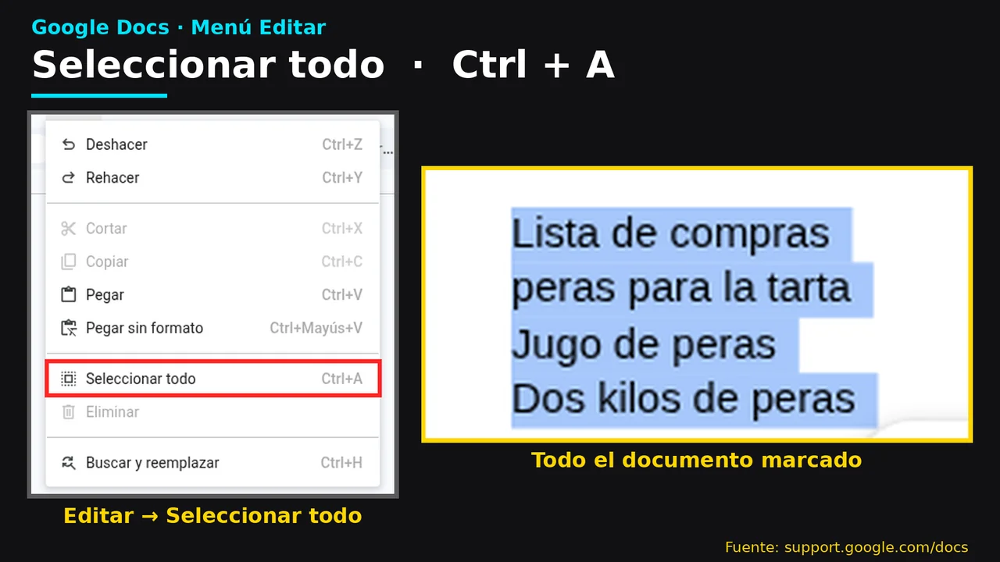
Editar → Eliminar borra el texto seleccionado. Igual que Cortar, está en gris si no hay nada marcado.
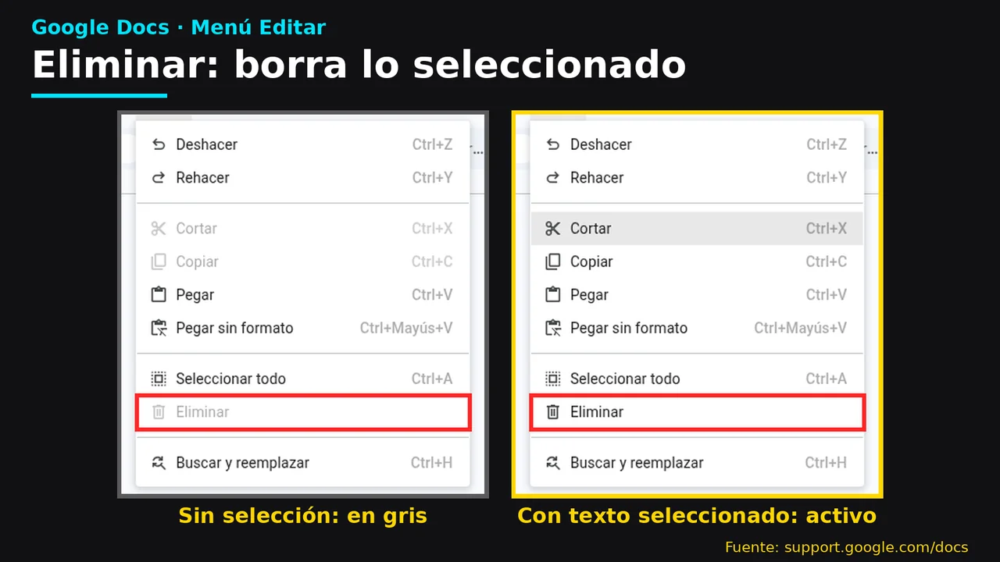
6. Buscar y reemplazar
Editar → Buscar y reemplazar (Ctrl + H) encuentra una palabra en todo el documento y la cambia por otra. Se abre un cuadro con los campos Buscar y Reemplazar con.
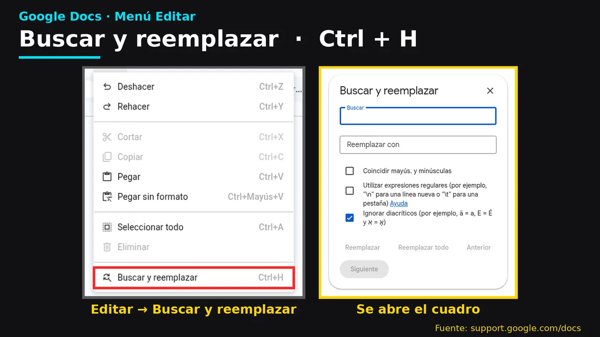
Escribís qué buscar y con qué reemplazarlo, y elegís Reemplazar (una por una) o Reemplazar todo. Con Anterior y Siguiente recorrés las coincidencias. En el ejemplo buscamos «peras» para cambiarla por «manzanas», pero no reemplazamos nada: cerramos el cuadro con la X.
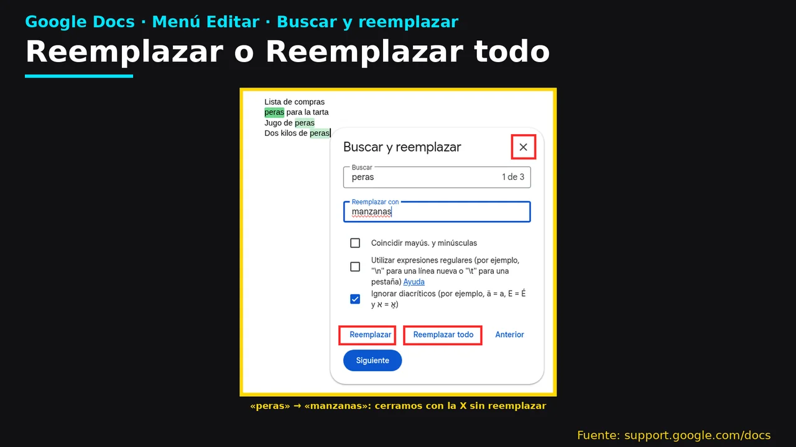
Lo vimos paso a paso en la lección Cómo buscar y reemplazar una palabra en Google Docs (3 pasos) · Short.
Lo que sigue: los Shorts de las opciones del menú Editar se publican enlazados a este video largo. Después sigue el menú Ver. Mirá el calendario. ¿Te perdiste el anterior? Google Docs: menú Archivo paso a paso.
Fuentes oficiales (Ayuda de Editores de Documentos de Google):
- https://support.google.com/docs/answer/179738?hl=es-419
- https://support.google.com/docs/answer/62754?hl=es-419
Capturas propias en un documento de ejemplo («Lista de compras»). El video usa voz generada con IA.